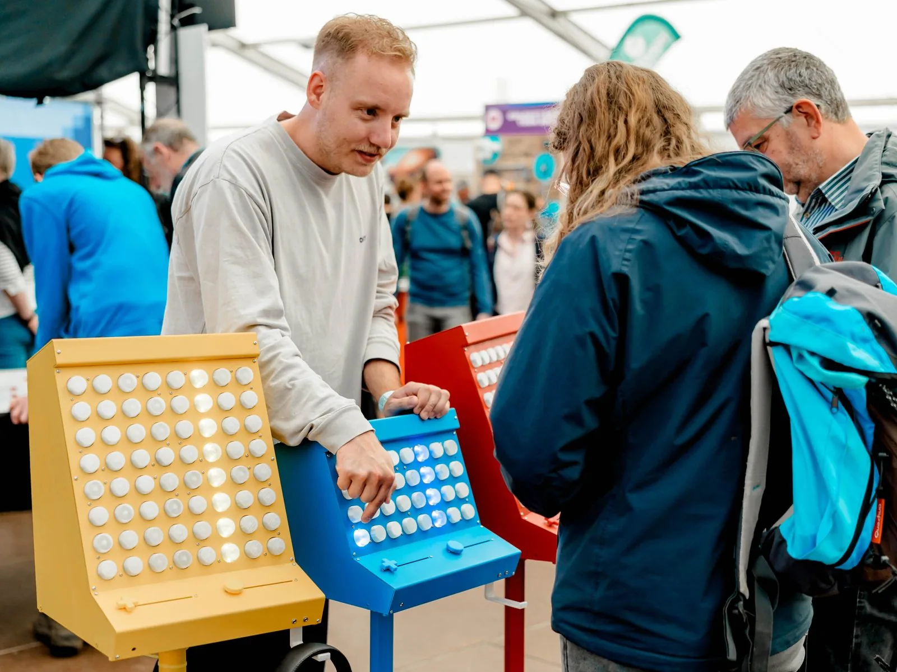

Een Muzikale Speelplaats voor Iedereen
Dit creatieve nerdje stond op het Nerdland Festival met de SideQuest Rave, een interactieve muziekinstallatie die mensen samenbrengt. Geen moment rust gehad, maar dat is voor mij pas echt de high score.

De SideQuest Rave is een interactieve muziekinstallatie waarmee iedereen vette elektronische beats kan maken. Door aan de knoppen te draaien en patronen te tekenen creëren mensen melodieën, basslines en ritmes. Het unieke is dat de machines samenwerken, waardoor er harmonie in muziek en tussen mensen ontstaat. Zelfs mensen zonder muzikale ervaring kunnen zich uitleven.
Inspiratie en doel
De inspiratie kwam tijdens een muziekles voor neurodiverse jongeren die ik voor het speciaal onderwijs ontwikkelde. Daar ontdekte ik dat creativiteit en muziek mensen verbinden, maar dat het ook frustrerend kan zijn als je nog niet zo goed een instrument bespeelt als de muzikanten die je online vindt. Met het doel mensen samen te brengen in een creatieve, open sfeer ben ik de SideQuest Rave gaan maken.
Het grootste compliment is als mensen de installatie zien als speelgoed, en zonder dat ze het doorhebben in een positieve omgeving belanden waarin ze samen iets moois maken.
Oprechte reacties van bezoekers
De reacties op het Nerdland Festival waren positief. De installatie bracht een glimlach op de gezichten van jong en oud. De mooiste momenten zijn de families die, zonder muzikale achtergrond, trots staan te dansen op de muziek die ze zelf maken.
Wil je zo'n muziekervaring op jouw locatie, of ben je benieuwd naar onze workshops? Neem contact op.